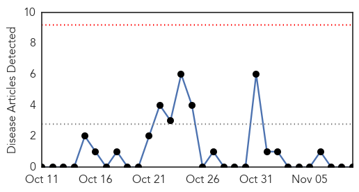

West Nile Virus
30-Day Web Trend
0 alerts, 0 warnings

30-Day Twitter Trend
0 alerts, 0 warnings

Article Locations

Article Confidences

Top Articles:
-
No articles found for Nov 09, 2014
Top Tweets:
-
No tweets found for Nov 09, 2014
Influenza
30-Day Web Trend
0 alerts, 0 warnings

30-Day Twitter Trend
0 alerts, 0 warnings

Article Locations

Article Confidences

Top Articles:
- 0.999
- A flu shot can protect you and everyone around you
- 0.998
- Study finds influenza viruses put more people in hospital
- 0.998
- Why It’s Important to Prepare for Flu Season
- 0.992
- Scarsdale parents of Amanda Kanowitz urge flu vaccine after daughter's death
- 0.976
- Why I decided to get the flu vaccine for myself and my children
- 0.953
- Unvaccinated Children Show Better Resistance to EV-D68 Virus
- 0.944
- Cryptosporidium and Flu Shots: Today’s topics on Outbreak News This Week
- 0.907
- Getting A Flu Shot Is Not Just About You
- 0.871
- Weather change may trigger flu in Oman
Top Tweets:
-
No tweets found for Nov 09, 2014